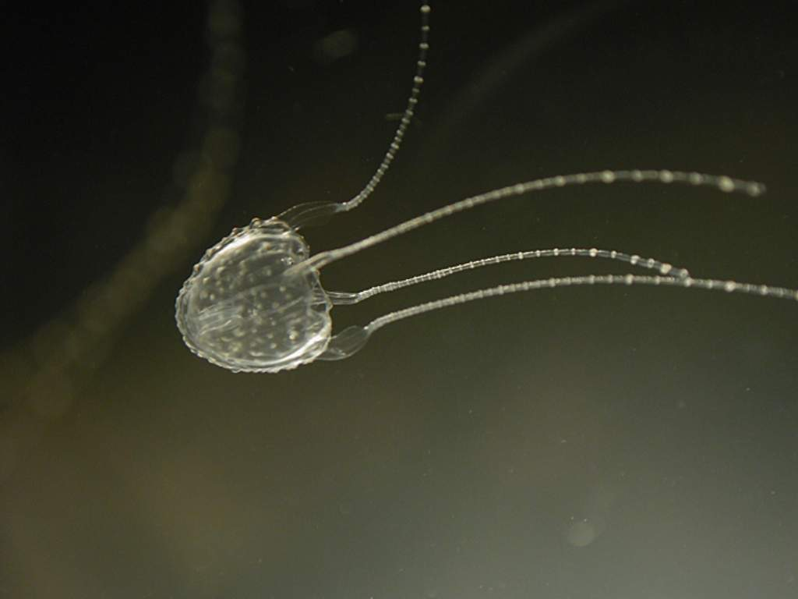

Ируканджи
Тело этой медузы не превышает 30 миллиметров, но это не делает ее менее опасной: ируканджи считается необычайно ядовитой. После ее "укуса" у человека возникает одноименный синдром, заключающийся в сильной головной боли, боли в спине, в области живота и таза, в тошноте, рвоте, гипертонии, тахикардии и отеке легких. Где обитает: преимущественно в водах Австралии. Но некоторым данным, потепление приводит к постепенному распространению ируканджи в водах мирового океана.
